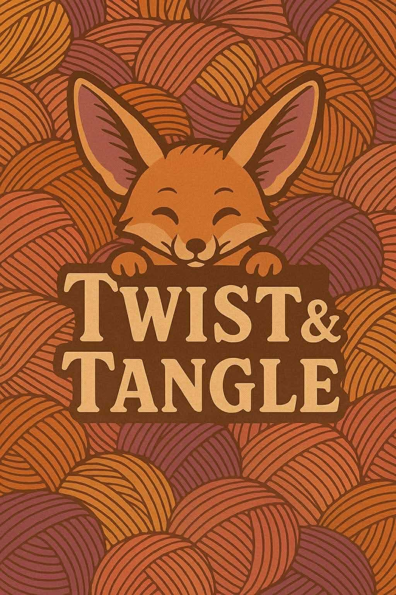

Made slowly
Time, care, and attention in every stitch.
 Twist & TangleCROCHET STUDIO
Twist & TangleCROCHET STUDIO
SMALL-BATCH. SOUL-MADE.
Handmade fiber art for the moments, people, and places you want to hold onto.

Good things take the time they take.
Made in our little corner of the world.
Made to become part of your story.
A SOFTER KIND OF SPECIAL
At Twist & Tangle, we believe the best things aren’t rushed or mass-produced. They’re made one thoughtful stitch at a time, with your story woven into every detail.
Meet the makerTime, care, and attention in every stitch.
Your story is part of the design.
Thoughtful materials, pieces worth keeping.
A FEW THINGS WE LOVE TO MAKE
One-of-a-kind pieces, made to fit your life and the way you like to feel.
Find your fit 02 / MADE FOR YOUR SPACESoft, sculptural details to give a room a little more heart.
Find your feeling 03 / MADE TOGETHERGood company, happy hands, and a new little skill to take home.
Come sit with usA GOOD THING, MADE TOGETHER
A color, a feeling, a little something you’ve been imagining.
We’ll choose materials, talk through details, and agree on timing.
Your one-of-a-kind piece comes to life, one careful stitch at a time.
There is something lovely about knowing exactly whose hands made the thing you love.A NOTE FROM THE STUDIO
FRESH OFF THE NEEDLES
A FEW GOOD QUESTIONS
Wondering about the details? We’re happy to help you find your starting point.
More studio questionsMost custom pieces take around 3–6 weeks once the design and materials are agreed. We’ll confirm a clear timeline before we begin.
Absolutely. We’ll help you choose from a thoughtful selection of fibers and colors to make the finished piece feel like yours.
Not at all. Our small-group sessions welcome complete beginners, and all the materials are provided.
YOUR IDEA IS A LOVELY PLACE TO START
Whether you have every detail figured out or just a feeling, that’s more than enough to get started.
Within 2–3 studio days
Every custom piece starts with a friendly conversation.